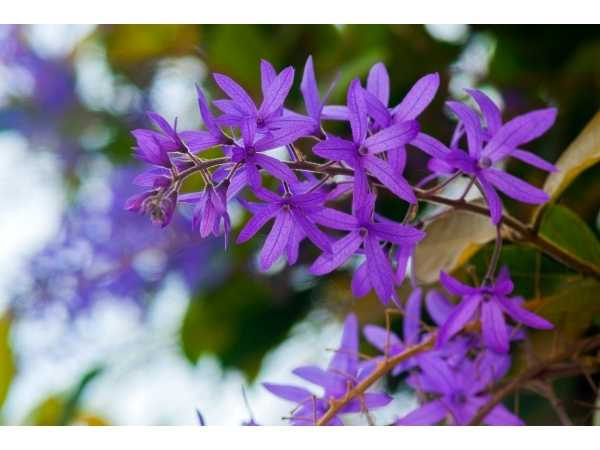

Petrea volubilis
Common Names: Purple Wreath, Queen's Wreath, Sandpaper Vine, Blue Bird Vine
Local Name: Neela Malar Kodi (Tamil)
Family: Verbenaceae
Origin: Mexico, Central America, Caribbean
Plant Type: Perennial woody climbing vine / scrambling shrub
Average Lifespan: 20–30 years
| Growth Habit | Vigorous woody climber; can reach 6–10 meters |
| Plant Size | 6–10 meters long vine; spread 3–5 meters |
| Leaves | Opposite, ovate, rough sandpaper texture, 5–12 cm long, dark green |
| Flowers | Star-shaped, violet-purple, in long drooping racemes 15–30 cm |
| Flower Characteristics | 5-petalled; persistent star-shaped calyx remains after petals fall, giving a two-tone effect |
| Root System | Deep, woody root system; drought-tolerant once established |
| Climate | Tropical to subtropical; frost-sensitive |
| Temperature Range | 18–35°C; cannot tolerate frost |
| Rainfall Requirement | 600–1500 mm annually |
| Soil Type | Well-drained loamy or sandy soil; tolerates poor soils |
| Soil pH Preference | 6.0–7.5 |
| Sun Requirement | Full sun for best flowering |
| Spacing | 3–5 meters; needs strong trellis or pergola |
| Water Requirement | Moderate; drought-tolerant once established |
| Can it Grow in Pots? | Not ideal; best in ground with support structure |
| Fertilizer Schedule | Monthly during growing season with balanced fertilizer |
| Recommended Organic Fertilizers | Compost, vermicompost, bone meal |
| Pruning Time | After flowering season; light pruning to shape |
| How to Prune | Remove spent flower clusters; trim to maintain shape and encourage new growth |
| Common Pests | Scale insects, mealybugs, aphids |
| Common Diseases | Powdery mildew, root rot in waterlogged conditions |
| Flowering Months | February–May (peak); sporadic throughout year in tropics |
| Pollination Type | Insect-pollinated; bees and butterflies |
| Propagation by Seeds | Seeds germinate in 2–4 weeks; slow to establish |
| Propagation by Cuttings | Semi-hardwood cuttings in summer; preferred method |
| Water Usage | Low once established; drought-tolerant |
| Biodiversity Benefits | Attracts butterflies, bees, and hummingbirds |
Add your field observations here.